Point Vortices with Lobatto VPRK Methods and Projections
VPRKLobattoIIIA(2)
Simulation crashed after 0 of 10000 time steps: singular matrix.
LobattoIIIA(2) with standard projection
Simulation crashed after 0 of 10000 time steps: singular matrix.
LobattoIIIA(2) with symmetric projection
Simulation crashed after 0 of 10000 time steps: singular matrix.
LobattoIIIA(2) with symplectic projection
Simulation crashed after 0 of 10000 time steps: singular matrix.
LobattoIIIA(2) with midpoint projection
Simulation crashed after 0 of 10000 time steps: singular matrix.
LobattoIIIA(2) with internal stage projection
Simulation crashed after 0 of 10000 time steps: MethodError.
VPRKLobattoIIIA(3)
Simulation crashed after 0 of 10000 time steps: singular matrix.
LobattoIIIA(3) with standard projection
Simulation crashed after 0 of 10000 time steps: singular matrix.
LobattoIIIA(3) with symmetric projection
Simulation crashed after 0 of 10000 time steps: singular matrix.
LobattoIIIA(3) with symplectic projection
Simulation crashed after 0 of 10000 time steps: singular matrix.
LobattoIIIA(3) with midpoint projection
Simulation crashed after 0 of 10000 time steps: singular matrix.
LobattoIIIA(3) with internal stage projection
Simulation crashed after 0 of 10000 time steps: MethodError.
VPRKLobattoIIIA(4)
Simulation crashed after 0 of 10000 time steps: singular matrix.
LobattoIIIA(4) with standard projection
Simulation crashed after 0 of 10000 time steps: singular matrix.
LobattoIIIA(4) with symmetric projection
Simulation crashed after 22 of 10000 time steps: solver error – non-finite direction vector.
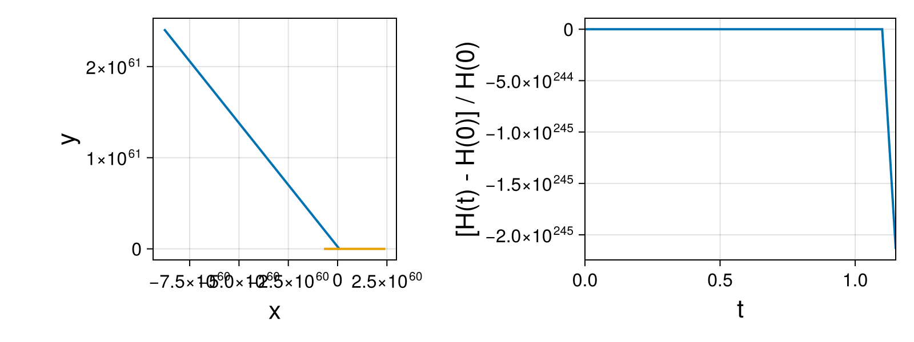
LobattoIIIA(4) with symplectic projection
Simulation crashed after 0 of 10000 time steps: singular matrix.
LobattoIIIA(4) with midpoint projection
Simulation crashed after 26 of 10000 time steps: solver error – non-finite direction vector.
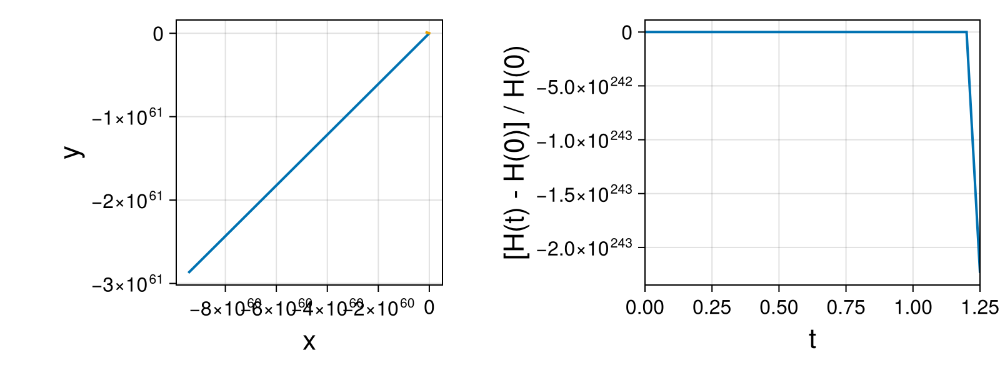
LobattoIIIA(4) with internal stage projection
Simulation crashed after 0 of 10000 time steps: MethodError.
VPRKLobattoIIIB(2)
Simulation crashed after 0 of 10000 time steps: singular matrix.
LobattoIIIB(2) with standard projection
Simulation crashed after 0 of 10000 time steps: singular matrix.
LobattoIIIB(2) with symmetric projection
Simulation crashed after 0 of 10000 time steps: singular matrix.
LobattoIIIB(2) with symplectic projection
Simulation crashed after 0 of 10000 time steps: singular matrix.
LobattoIIIB(2) with midpoint projection
Simulation crashed after 0 of 10000 time steps: singular matrix.
LobattoIIIB(2) with internal stage projection
Simulation crashed after 0 of 10000 time steps: MethodError.
VPRKLobattoIIIB(3)
Simulation crashed after 0 of 10000 time steps: singular matrix.
LobattoIIIB(3) with standard projection
Simulation crashed after 0 of 10000 time steps: singular matrix.
LobattoIIIB(3) with symmetric projection
Simulation crashed after 6271 of 10000 time steps: solver error – non-finite direction vector.
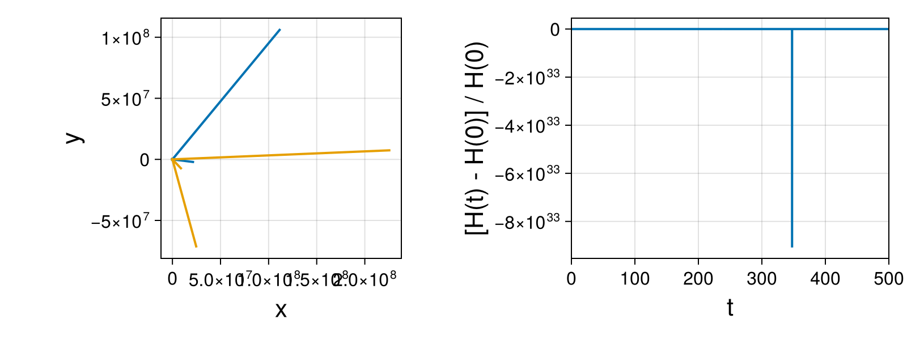
LobattoIIIB(3) with symplectic projection
Simulation crashed after 0 of 10000 time steps: singular matrix.
LobattoIIIB(3) with midpoint projection
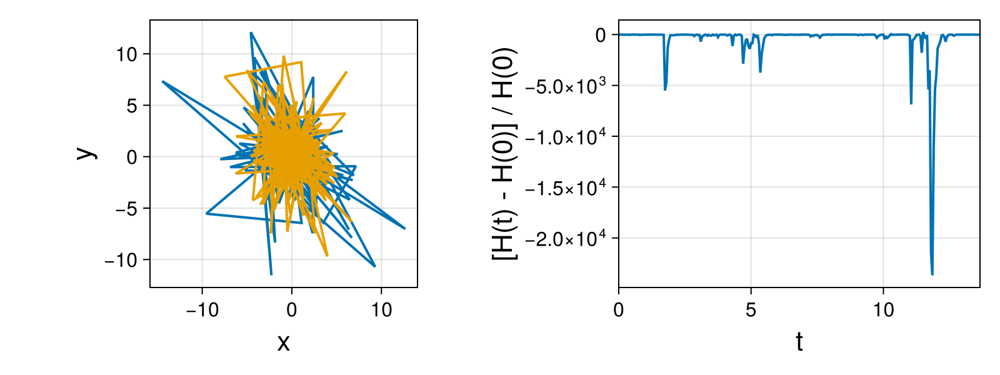
LobattoIIIB(3) with internal stage projection
Simulation crashed after 0 of 10000 time steps: MethodError.
VPRKLobattoIIIB(4)
Simulation crashed after 0 of 10000 time steps: singular matrix.
LobattoIIIB(4) with standard projection
Simulation crashed after 0 of 10000 time steps: singular matrix.
LobattoIIIB(4) with symmetric projection
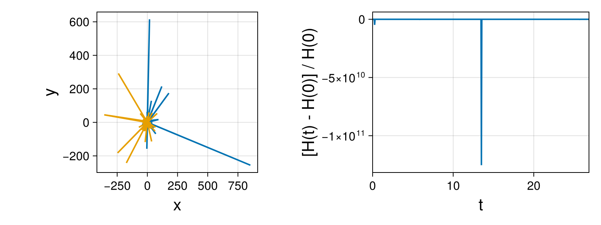
LobattoIIIB(4) with symplectic projection
Simulation crashed after 0 of 10000 time steps: singular matrix.
LobattoIIIB(4) with midpoint projection
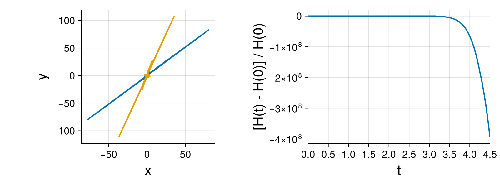
LobattoIIIB(4) with internal stage projection
Simulation crashed after 0 of 10000 time steps: MethodError.
VPRKLobattoIIIC(2)
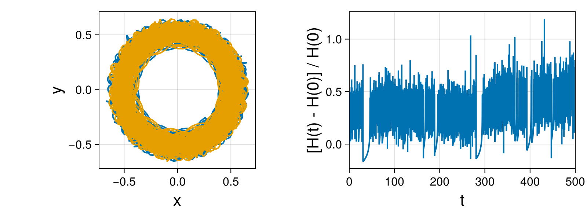
LobattoIIIC(2) with standard projection
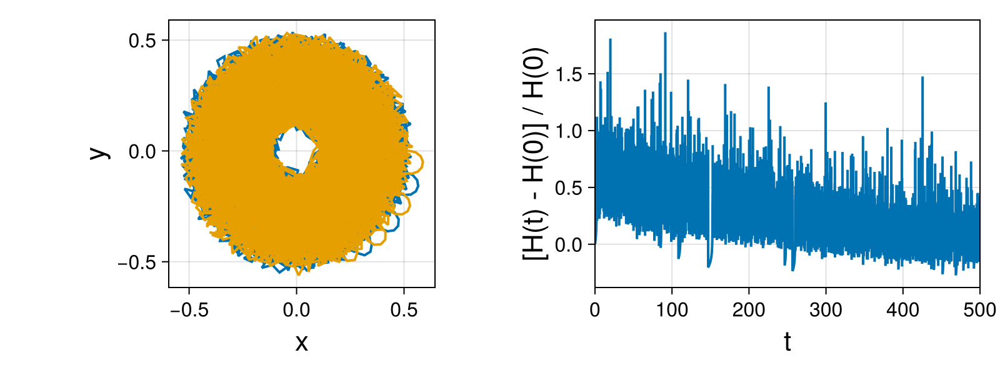
LobattoIIIC(2) with symmetric projection
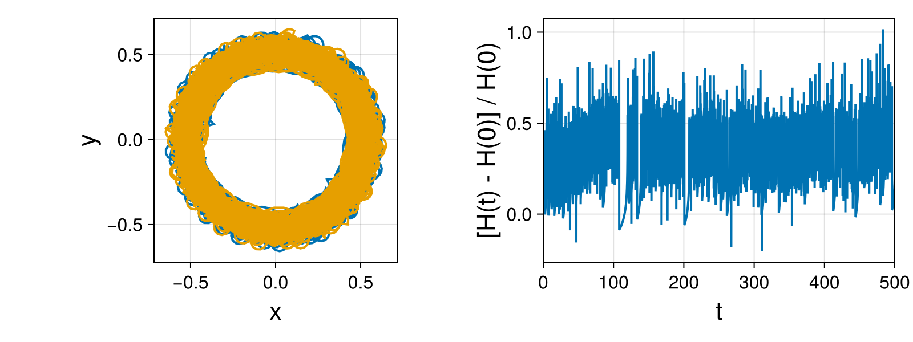
LobattoIIIC(2) with symplectic projection

LobattoIIIC(2) with midpoint projection
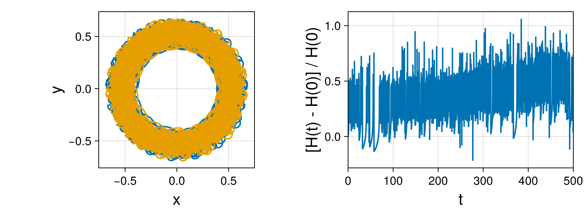
LobattoIIIC(2) with internal stage projection
Simulation crashed after 0 of 10000 time steps: MethodError.
VPRKLobattoIIIC(3)

LobattoIIIC(3) with standard projection

LobattoIIIC(3) with symmetric projection

LobattoIIIC(3) with symplectic projection
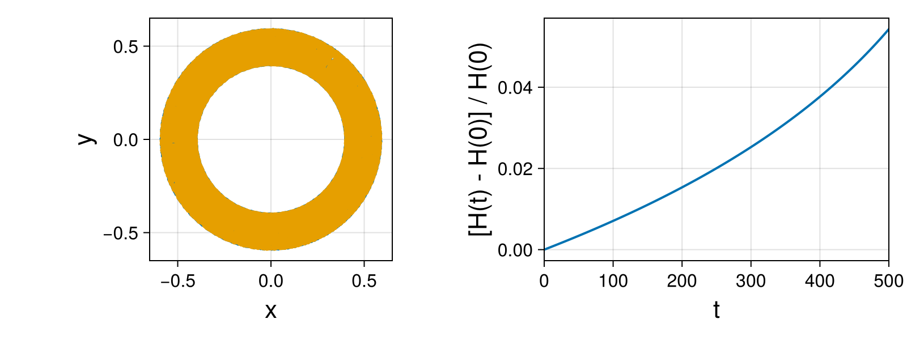
LobattoIIIC(3) with midpoint projection

LobattoIIIC(3) with internal stage projection
Simulation crashed after 0 of 10000 time steps: MethodError.
VPRKLobattoIIIC(4)
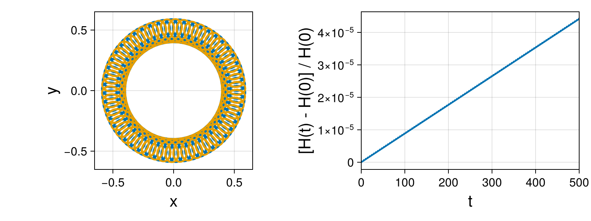
LobattoIIIC(4) with standard projection

LobattoIIIC(4) with symmetric projection
LobattoIIIC(4) with symplectic projection
LobattoIIIC(4) with midpoint projection

LobattoIIIC(4) with internal stage projection
Simulation crashed after 0 of 10000 time steps: MethodError.
VPRKLobattoIIID(2)
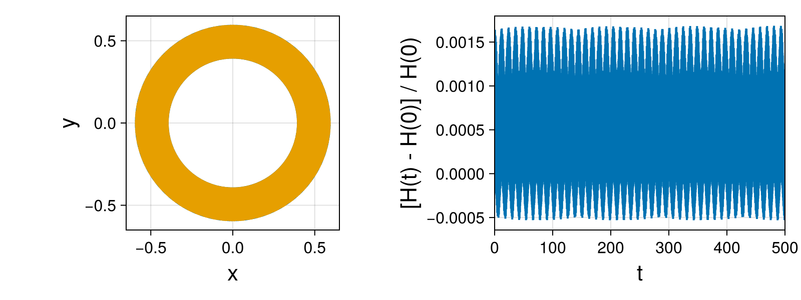
LobattoIIID(2) with standard projection

LobattoIIID(2) with symmetric projection
LobattoIIID(2) with symplectic projection
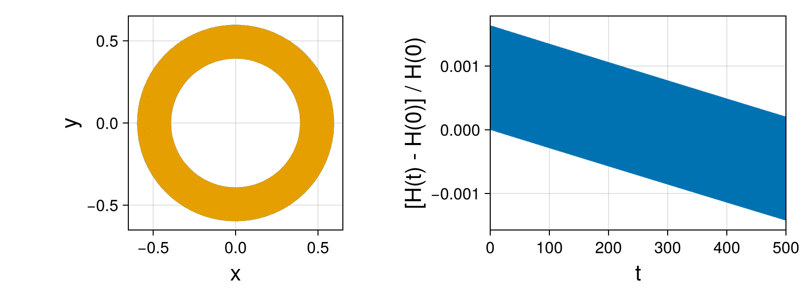
LobattoIIID(2) with midpoint projection
LobattoIIID(2) with internal stage projection
Simulation crashed after 0 of 10000 time steps: MethodError.
VPRKLobattoIIID(3)
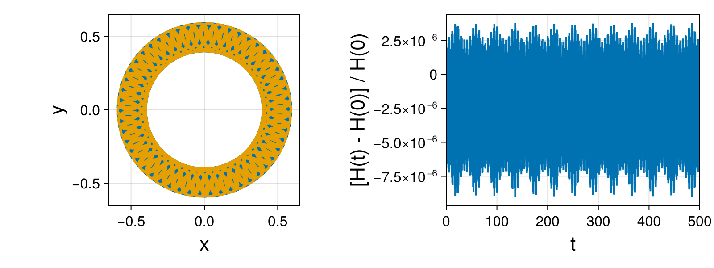
LobattoIIID(3) with standard projection

LobattoIIID(3) with symmetric projection
LobattoIIID(3) with symplectic projection
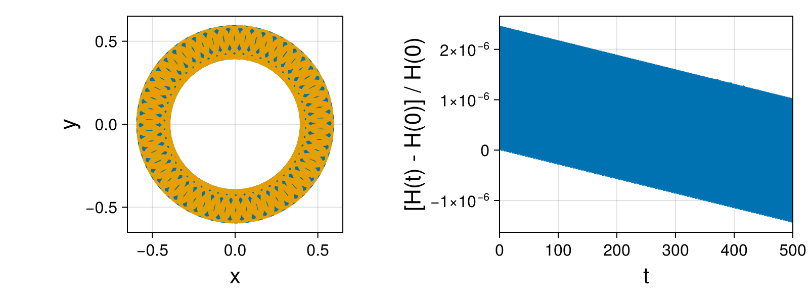
LobattoIIID(3) with midpoint projection
LobattoIIID(3) with internal stage projection
Simulation crashed after 0 of 10000 time steps: MethodError.
VPRKLobattoIIID(4)
LobattoIIID(4) with standard projection
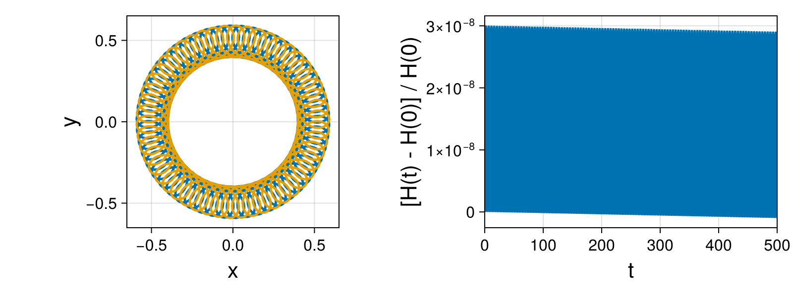
LobattoIIID(4) with symmetric projection
LobattoIIID(4) with symplectic projection

LobattoIIID(4) with midpoint projection
LobattoIIID(4) with internal stage projection
Simulation crashed after 0 of 10000 time steps: MethodError.
VPRKLobattoIIIE(2)
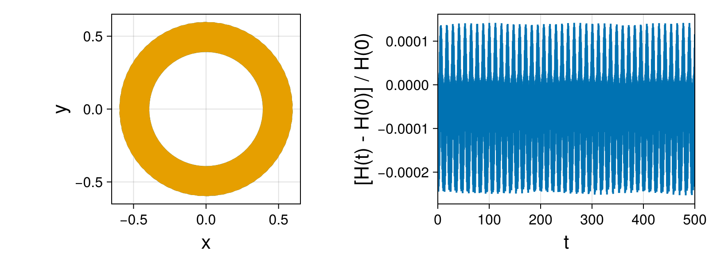
LobattoIIIE(2) with standard projection

LobattoIIIE(2) with symmetric projection
LobattoIIIE(2) with symplectic projection
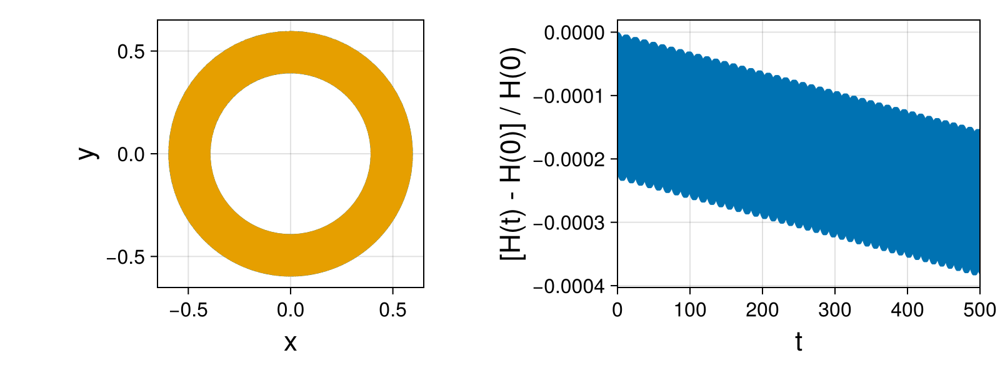
LobattoIIIE(2) with midpoint projection
LobattoIIIE(2) with internal stage projection
Simulation crashed after 0 of 10000 time steps: MethodError.
VPRKLobattoIIIE(3)
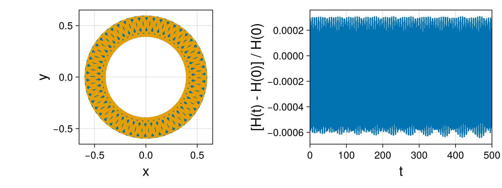
LobattoIIIE(3) with standard projection

LobattoIIIE(3) with symmetric projection
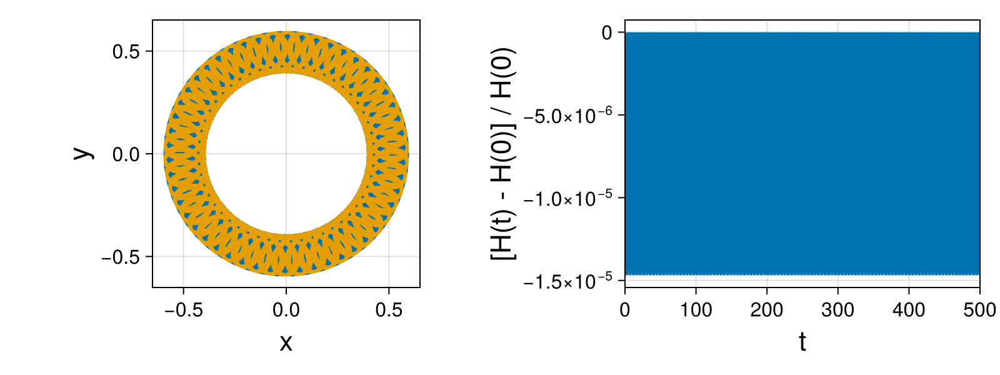
LobattoIIIE(3) with symplectic projection
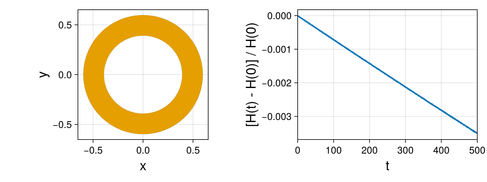
LobattoIIIE(3) with midpoint projection
LobattoIIIE(3) with internal stage projection
Simulation crashed after 0 of 10000 time steps: MethodError.
VPRKLobattoIIIE(4)
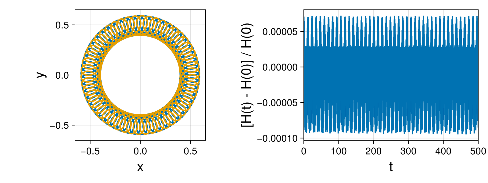
LobattoIIIE(4) with standard projection

LobattoIIIE(4) with symmetric projection
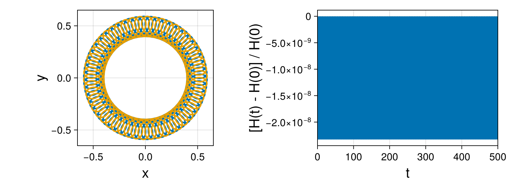
LobattoIIIE(4) with symplectic projection
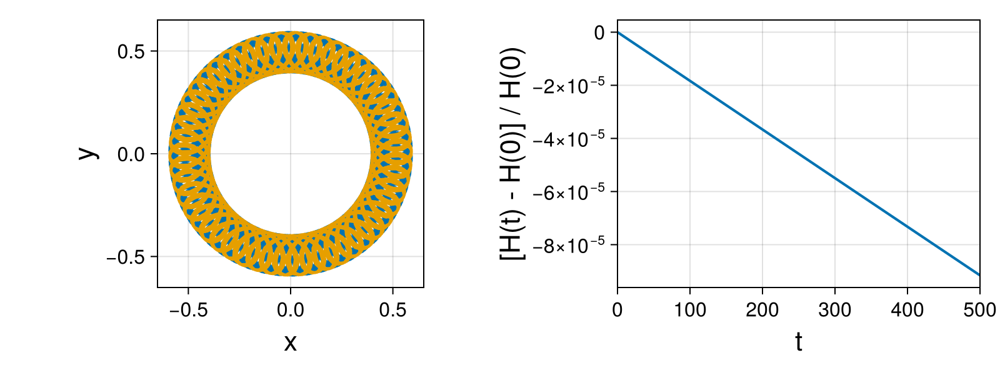
LobattoIIIE(4) with midpoint projection
LobattoIIIE(4) with internal stage projection
Simulation crashed after 0 of 10000 time steps: MethodError.
VPRKLobattoIIIF(2)
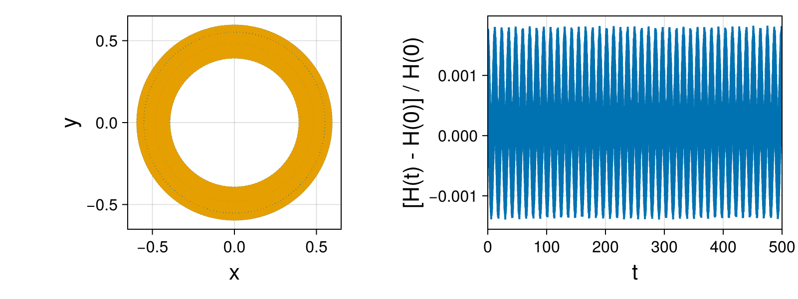
LobattoIIIF(2) with standard projection
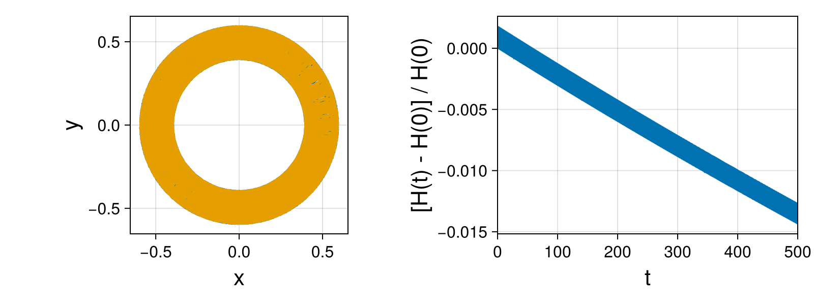
LobattoIIIF(2) with symmetric projection
LobattoIIIF(2) with symplectic projection

LobattoIIIF(2) with midpoint projection
LobattoIIIF(2) with internal stage projection
Simulation crashed after 0 of 10000 time steps: MethodError.
VPRKLobattoIIIF(3)
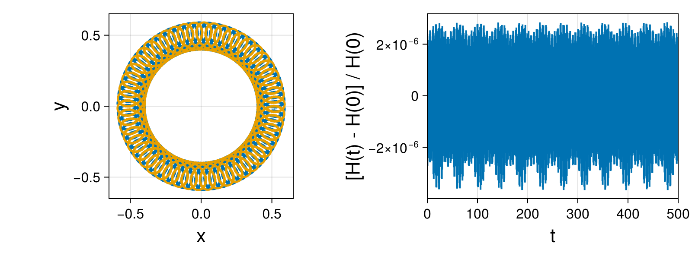
LobattoIIIF(3) with standard projection

LobattoIIIF(3) with symmetric projection
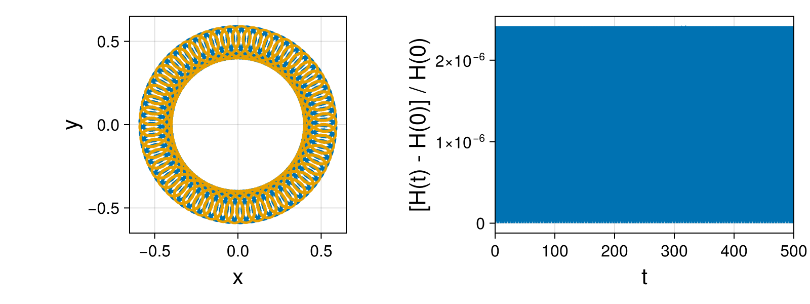
LobattoIIIF(3) with symplectic projection
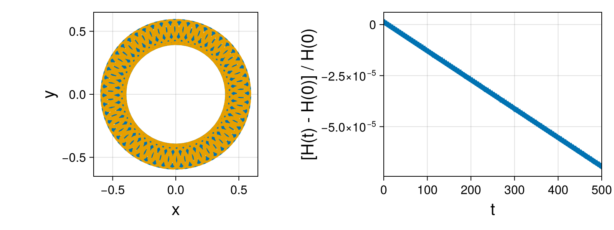
LobattoIIIF(3) with midpoint projection
LobattoIIIF(3) with internal stage projection
Simulation crashed after 0 of 10000 time steps: MethodError.
VPRKLobattoIIIF(4)
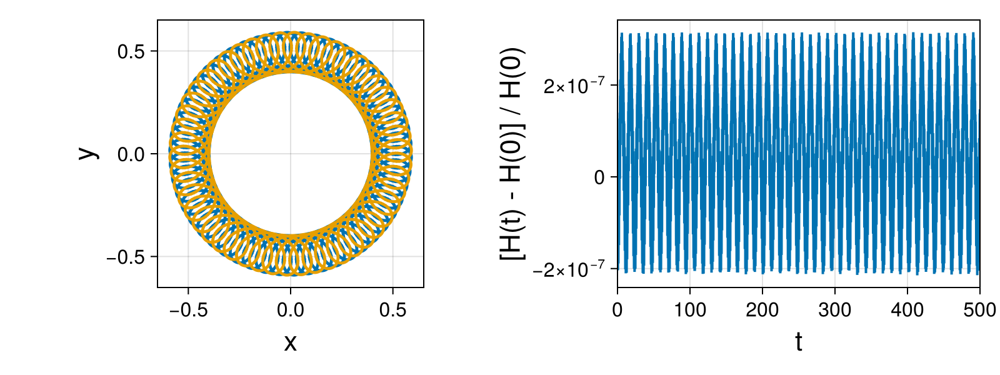
LobattoIIIF(4) with standard projection
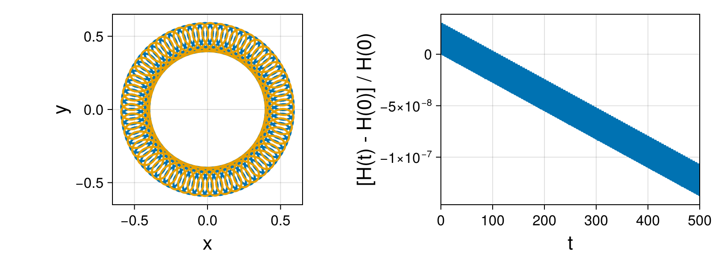
LobattoIIIF(4) with symmetric projection
LobattoIIIF(4) with symplectic projection

LobattoIIIF(4) with midpoint projection
LobattoIIIF(4) with internal stage projection
Simulation crashed after 0 of 10000 time steps: MethodError.
VPRKLobattoIIIG(2)
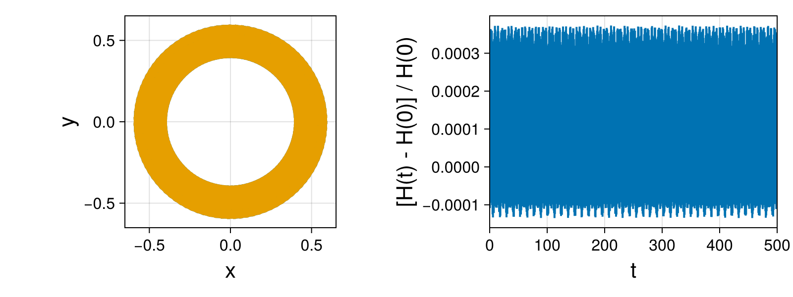
LobattoIIIG(2) with standard projection

LobattoIIIG(2) with symmetric projection
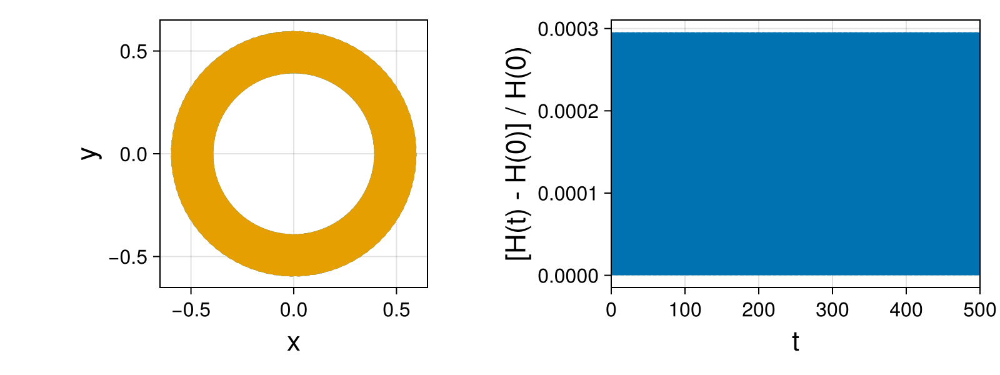
LobattoIIIG(2) with symplectic projection
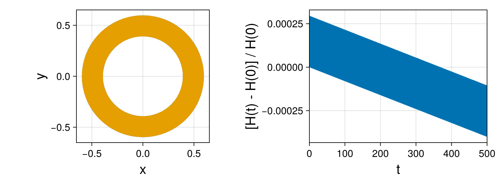
LobattoIIIG(2) with midpoint projection
LobattoIIIG(2) with internal stage projection
Simulation crashed after 0 of 10000 time steps: MethodError.
VPRKLobattoIIIG(3)
LobattoIIIG(3) with standard projection

LobattoIIIG(3) with symmetric projection
LobattoIIIG(3) with symplectic projection
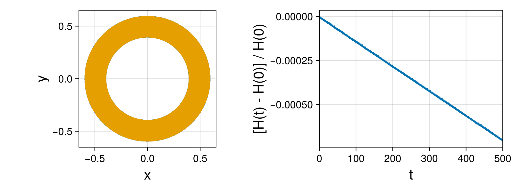
LobattoIIIG(3) with midpoint projection
LobattoIIIG(3) with internal stage projection
Simulation crashed after 0 of 10000 time steps: MethodError.
VPRKLobattoIIIG(4)
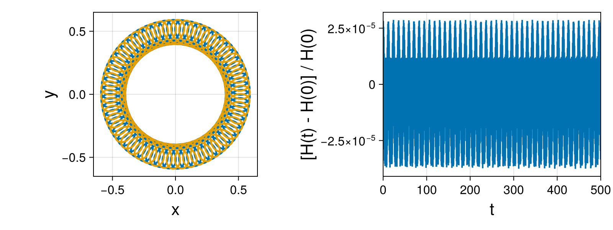
LobattoIIIG(4) with standard projection
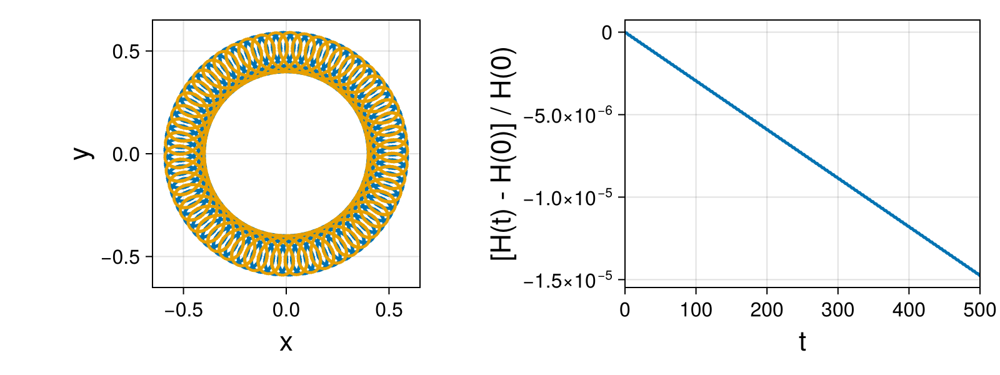
LobattoIIIG(4) with symmetric projection
LobattoIIIG(4) with symplectic projection

LobattoIIIG(4) with midpoint projection
LobattoIIIG(4) with internal stage projection
Simulation crashed after 0 of 10000 time steps: MethodError.